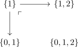
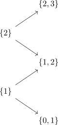
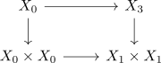
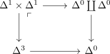
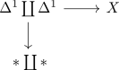
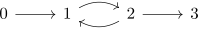
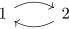

rezk nerve of an infinity category as complete segal anima
Proposition
The Rezk nerve
lands in complete segal anima.
Proof
segal
note that

is an pushout, respectively

is a colimit where we regard each object as partially ordered set.
This follows by the quillen formula for infinity colimits in Cat infinity where each map is a cofibration (since it is a monomorphism) and each object is trivially cofibrant object
Then by mapping space functor preserves limits / mapping space functor preserves colimits this maps to
where we shortcut the notation for the limit / colimit
complete
we want to show the characterization as pullback

this is equivalent to showing that the following diagram is an pushout
for that we want to compute the pushout in Cat_infinity

For that we use quillen formula for infinity colimits in Cat infinity and replace (cf. 1 categorical equivalence and nerve as joyal equivalence) up to joyal equivalence to get

where $X$ is defined as

where we include $\Delta^1$ into $(0,1)$ resp. $(2,3)$. here the middle part is the isomorphism classifier $J$
Then as joyal model structure as left proper model structure & homotopy pushout of a single cofibration for a left proper model category the pushout above is equivalent to the homotopy pushout. Thankfully the pushout in category sSet is given by collapsing $0 \rightarrow 1, 2 \rightarrow 3$ to a single point.
Thus there remains

which is precisely the classifier nerve J. Fortunately $J$ is already a bifibrant object (since it is the nerve of an infinity category) hence it is also the colimit in Cat infinity.
But $J$ is also joyal equivalent to the point $\Delta^0$, since isomorphism classifier equivalent to point.